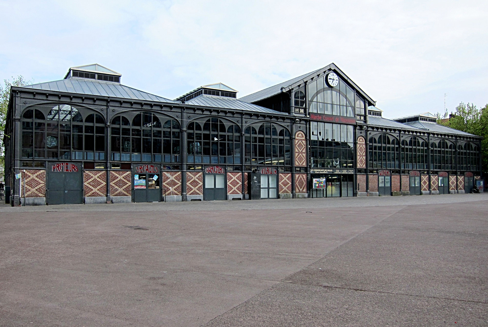

CityLoop Quest Lille


À Lille, les habitudes gourmandes se lisent dans les marchés, les brasseries, les estaminets, les boulangeries et les terrasses. Le repas n’est pas toujours cérémoniel : il peut être rapide, chaleureux, improvisé, mais rarement indifférent. On prend un café en observant la place, on partage une planche, on commande des frites, on s’attarde dans une brasserie parce que la pluie s’est invitée dehors.
Wazemmes est l’un des grands théâtres de cette culture alimentaire. Les Halles et le marché voisin rassemblent produits frais, traiteurs, épices, fromages, fleurs, cuisine de rue et conversations très lilloises. Le dimanche, l’ambiance devient presque une attraction en soi. C’est un lieu où l’on comprend que la gastronomie est aussi une affaire de rythme, de bruit, de voisinage et de mélange social.

Dans le centre et le Vieux-Lille, les estaminets et brasseries prolongent l’héritage flamand. Ces lieux valorisent souvent les plats de bière, les recettes régionales, les tables rapprochées et une atmosphère sans cérémonie excessive. Pour le visiteur, l’intérêt ne tient pas seulement à ce qu’il y a dans l’assiette, mais aussi à la manière dont le lieu accueille : chaleur, bois, ardoises, serveurs rapides, conversations qui montent quand la salle se remplit.

Les pauses sucrées ont également leur importance. Les gaufres, les pâtisseries, les chocolats et les spécialités à la vergeoise s’inscrivent dans une ville de commerce et de vitrines. Se promener à Lille, c’est souvent passer devant des devantures qui invitent à ralentir. Une bonne stratégie consiste à prévoir une pause courte entre deux étapes culturelles plutôt qu’un seul long repas.

CLQ vous conseille d’utiliser la gourmandise comme boussole. Un marché peut vous mener vers un quartier, une brasserie vers une rue historique, une pâtisserie vers une façade remarquable. À Lille, manger et visiter ne sont pas deux activités séparées : elles se répondent, car les lieux de bouche sont aussi des lieux de mémoire, de sociabilité et d’observation urbaine.
Le plus intéressant n’est donc pas seulement ce que l’on mange, mais la manière dont la ville organise ces moments. Un marché crée une matinée, une terrasse attire un quartier, une brasserie prolonge une promenade, une pâtisserie donne une raison de changer de rue. En suivant ces habitudes, le visiteur découvre une géographie très concrète de Lille : celle des pauses, des rencontres et des petites fidélités quotidiennes. Ces habitudes construisent une ville à hauteur de pause. Le marché du dimanche matin, la bière prise après une visite, le café à l’abri de la pluie, la gaufre rapportée comme souvenir, le déjeuner dans un estaminet ou la file devant une friterie composent une carte intime de Lille. Cette carte ne suit pas toujours les monuments : elle suit les rythmes de la faim, de la météo, de l’amitié et du hasard. C’est pourquoi les lieux gourmands sont si précieux pour l’expérience CLQ : ils transforment le parcours en journée vécue. Un visiteur qui prend le temps de s’asseoir comprend mieux les usages locaux qu’un visiteur qui enchaîne seulement les façades. À Lille, la gourmandise n’est pas un supplément touristique ; elle fait partie de la manière dont la ville ralentit, accueille et crée des souvenirs. Ces pauses permettent aussi de mieux gérer le temps. Une journée de visite devient plus agréable lorsqu’elle alterne découverte, repos, repas et imprévu. Lille offre beaucoup de lieux où faire cette transition : un marché, une brasserie, un salon de thé, une terrasse protégée, une halle ou une petite place. La gourmandise sert alors de respiration dans le parcours. Cette logique explique pourquoi certains souvenirs de voyage sont très simples : une odeur de frites, une salle bruyante, une vitrine de gaufres, un café pris trop lentement. À Lille, ces moments ordinaires deviennent souvent les repères les plus durables.